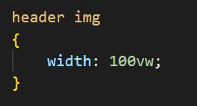

Indtil videre har vi arbejdet med CSS, som rammer alle tags af samme type på hele websiden. Når vi har stylet på h1-tags, så har det ramt alle h1-tags på hele siden.
Vi kan blive mere specifikke ved at angive CSS descendants (underliggende elementer), så vi ikke rammer fx alle a-tags men kun dem, der ligger inden i header-tags.
Hvis man skriver to CSS selectors efter hinanden (med mellemrum imellem) betyder det, at man skal tage hensyn til begge selectors: header img betyder, at den styling, der kommer nu, kun gælder for img tags, der ligger inden i header tags (altså billeder i vores header område).
Den underliggende selector behøver ikke ligge i niveauet lige under den overliggende selector. Den skal bare ligge et eller andet sted under, så vil CSS stylingen slå igennem på den.
Dette bruges ofte til at lave menuer eller headere, hvor tekst og billeder skal opføre sig lidt anderledes end andre steder på siden.
Vi kan fx bruge det til at gøre tekstfarven hvid i vores header og footer. Vi oplevede på forrige side, at vi ikke kunne få den hvide farve til at slå igennem.
I stylesheetet skal du nu skrive følgende:
header a, footer a
{
color: whitesmoke;
text-decoration: none;
margin: 0 20px;
}
Det gør tekstfarven hvid og fjerner understregningen på alle a-tags, som ligger under header-tagget og alle a-tags, som ligger under footer-tagget.
Tjek i din browser hvordan dine links i headeren nu ser ud. Nu begynder den efterhånden at ligne en menu.
Direct descendants
Vi kan også fortælle CSS, at den kun skal ramme selectors, som ligger i niveauet lige under den overliggende selector.
Det gør vi med større-end tegnet (krokodillenæb) på følgende måde: header > a.
På den måde kan vi blive mere og mere specifikke med de tags/selectors, som vi ønsker at ramme med vores styling.
Hvad så nu?
Undervejs i løbet af ugen har du måske arbejdet på dit fugleleksikon med de ting, som vi har lært i CSS. Du skal nu arbejde videre på dit fugleleksikon - bl.a. kan du nu lave noget, der begynder at ligne en menustruktur. Du kan også style på dine billeder og give dem rundede hjørner - bortset fra header-billedet.
Derudover skal du gøre siden så pæn som muligt med skrifttyper, farver, baggrundsfarver osv